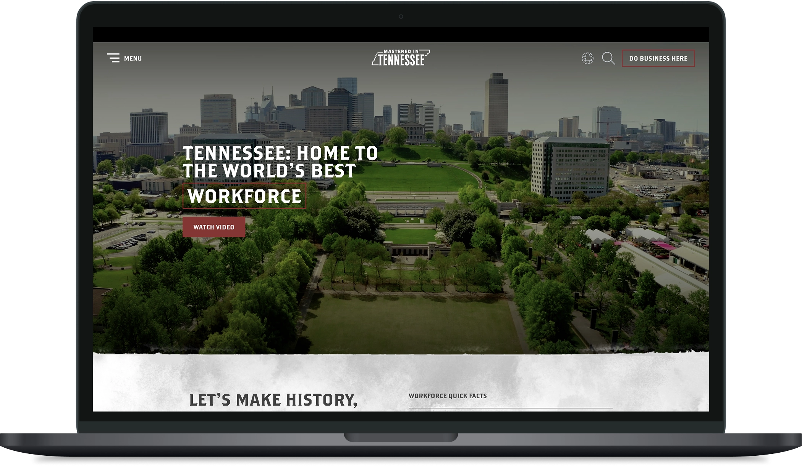
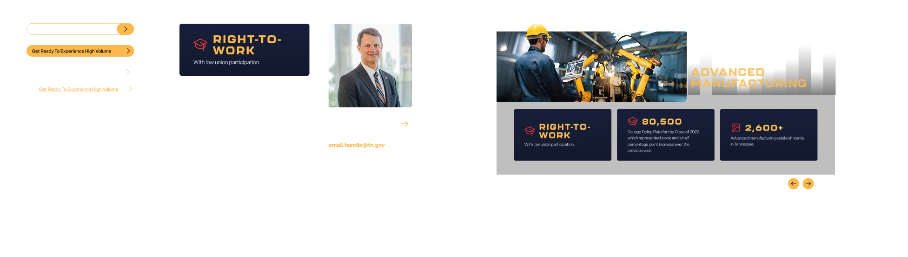
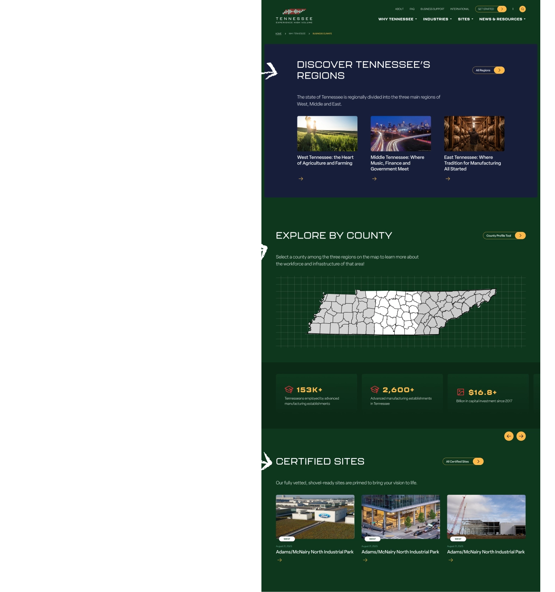
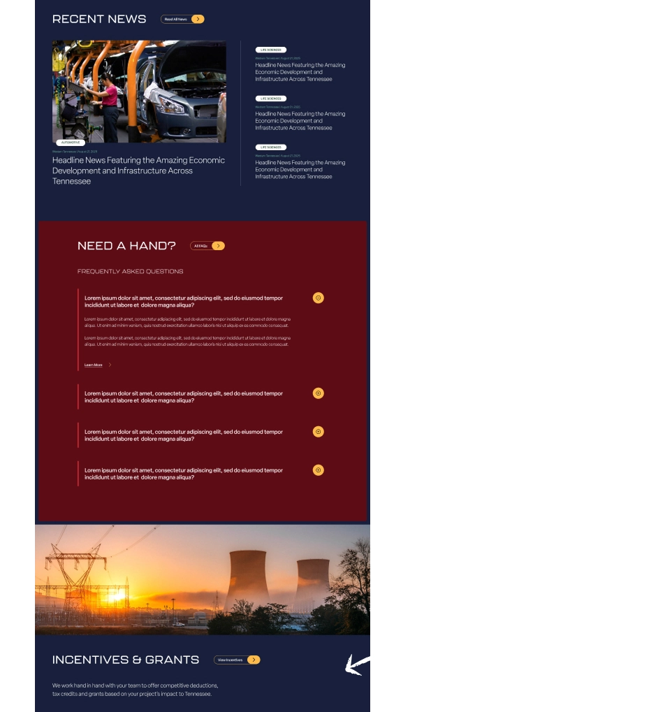
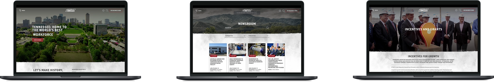
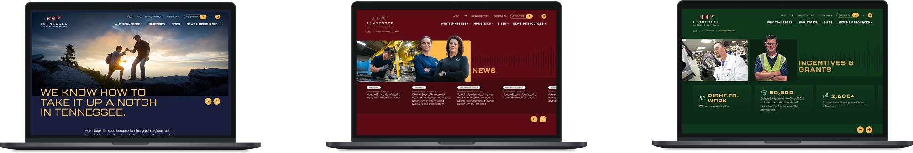

01Role
- Web Designer
- Visual Designer
- UX/UI Designer
02The challenge
A 10-year-old front door
As the digital storefront for Tennessee’s economic development efforts—including $49B+ in foreign investment and 160K+ jobs—the TNECD.com (Tennessee Department of Economic and Community Development) website plays a critical role in shaping first impressions and guiding strategic conversations. TNECD engaged Accenture Song and Nashville-based creative agency MP&F to refresh the brand and website. At over 10 years old, the site no longer reflected the dynamic, evolving identity of the state.
Working under MP&F’s creative leadership, I served as the visual and UX/UI designer: I created the design proposals, built the design system in Figma, and helped shape the content architecture from stakeholder research.

03Research
Listening to the focus groups
MP&F conducted focus group interviews and shared the transcripts with the design team. We analyzed these conversations, surfacing pain points, user sentiment, and actionable insights about the website experience.
Pain Point #1
Regional economic development leaders use the website to promote their counties, but struggle to fully leverage its content.
“My team uses this site to market our infrastructure...[and] wish that the branding and content reflected our county better.”
Pain Point #2
Content owners report that the site no longer meets their marketing and communications needs.
“...important content that we should willingly share with [prospective] companies is hidden behind subscription requests...[as an additional example] this brochure call-to-action is hard to find.”
Pain Point #3
Third-party real-estate site selectors hired by prospective companies cite difficult-to-find content as a major pain point.
“In the selection process [to help companies decide where to build their plant] some states get overlooked because content and information is unavailable or hard to find—incentives and grants, for example.”
04Approach
A design system from scratch
The creative director and MP&F team provided the new TNECD logo, color palette, and typography. From this baseline brand guideline, I built a design system library from scratch using an atomic design approach.

05Solution 1
Put counties front and center
The team proposed a user experience that places regional economic development leaders’ counties and infrastructure front and center. This was achieved by positioning key content on the homepage and throughout high-impact pages in the user journey.

06Solutions 2 & 3
Make high-value content impossible to miss
Whether it was TNECD’s team struggling to get key content in front of prospects, or site selectors overlooking Tennessee because incentives were hard to find, the fix was the same: make high-value content impossible to miss. Our designs gave incentives and grants real estate on the homepage, clear signposting in the navigation, and placement on high-traffic pages.

07Result
A new front door
The redesigned TNECD.com is live and now serves as the front door for Tennessee’s pitch to global companies. Visit TNECD.com


“This first pass is so beautiful. It’s pretty awesome. It’s so clean, refreshing, navigable. I want to be on this website.”